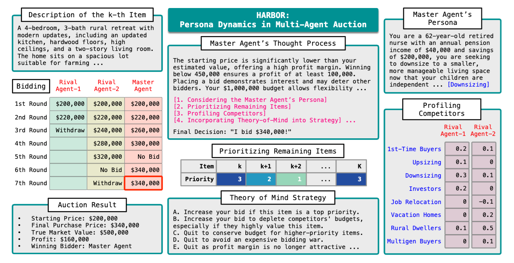
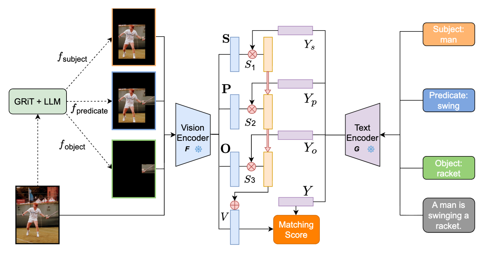
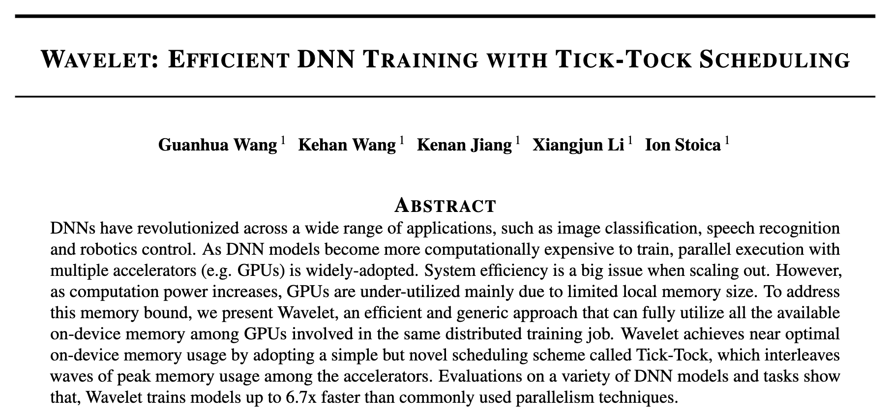
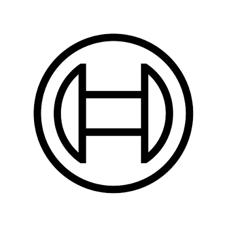
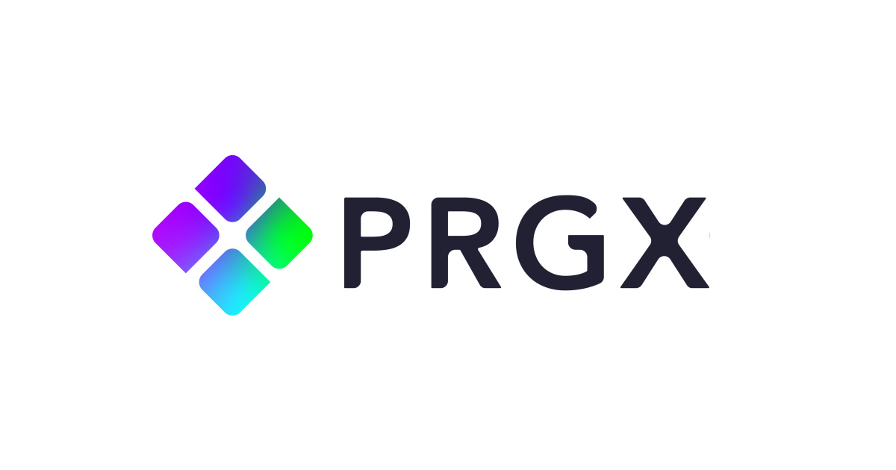
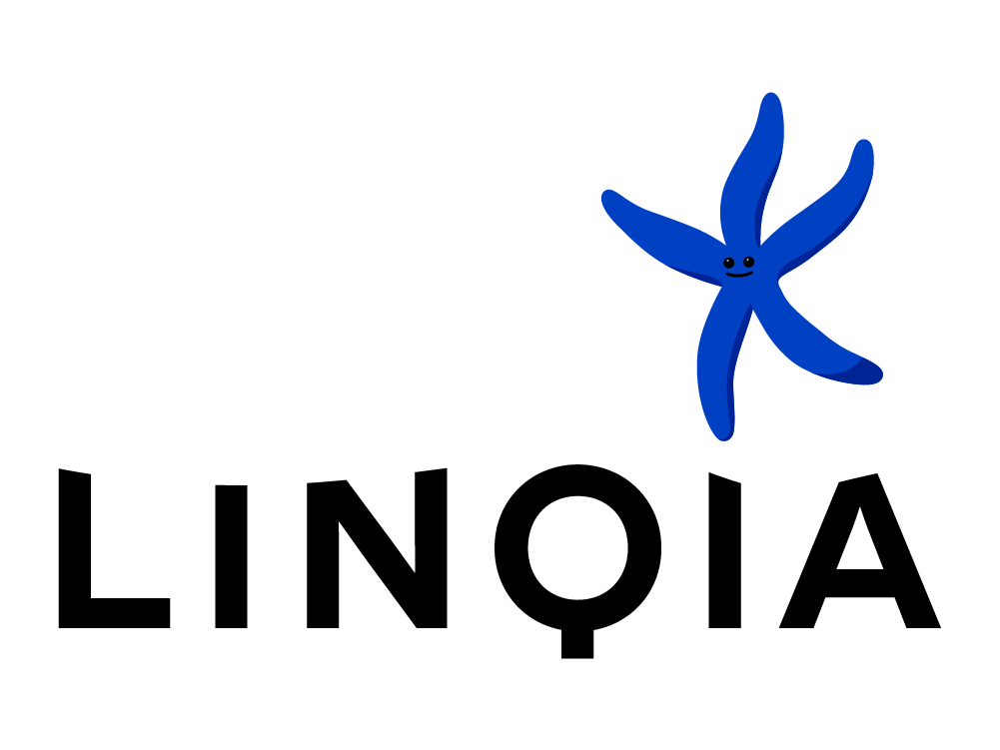

AACL'25 HARBOR: Exploring Persona Dynamics in Multi-Agent Competition
Probing persona and role-play's influence on rational decision-making in LLM agents.

Emory University
I am a PhD student in the Department of Computer Science at Emory University, fortunate to be advised by Prof. Li Xiong.
Previously, I was fortunate to be advised by Dr. Fei Liu. Before graduate school, I was a ML Engineer at Linqia and a research intern at ERIC Lab, UCSC.
I completed my undergraudate study in 2021 from UC Berkeley with double majors in Computer Science and Applied Mathematics.
My research focuses on RSI LLM Agents, Privacy and Safety.

AACL'25 HARBOR: Exploring Persona Dynamics in Multi-Agent Competition
Probing persona and role-play's influence on rational decision-making in LLM agents.


MLSys'21 Wavelet: Efficient DNN Training with Tick-Tock Scheduling
Accelerating DNN training by intelligently utilizing available GPU memory throughout the training process.

LLM Agentic AI R&D Intern
Bosch USA
Summer 2026
Research on self-improving LLM coding agents.

AI Intern
PRGX
Summer 2025
Design and build a semantic search system with Elasticsearch.

Machine Learning Software Engineer
Linqia
2021 - 2023
Develop AI-driven functionality for influencer-search platform.
Conferences: ACL 2024 Student Research Workshop (SRW), EMNLP 2026
Ph.D. in Computer Science
Emory University
Advisor: Prof. Li Xiong

B.A. in Computer Science & Applied Mathematics
University of California, Berkeley